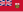
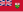
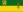
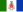
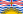
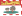
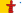

List of Canadian provinces and territories by gross domestic product
.svg){kind=link}
- > 900,000
- > 500,000
- > 300,000
- > 70,000
- > 30,000
- < 10,000
This article lists Canadian provinces and territories by gross domestic product (GDP).
While Canada's ten provinces and three territories exhibit high per capita GDPs, there is wide variation among them. Ontario, the country's most populous province, is a major manufacturing and trade hub with extensive linkages to the northeastern and midwestern United States. The economies of Alberta, Saskatchewan, Newfoundland and Labrador and the territories rely heavily on natural resources. On the other hand, Manitoba, Quebec and The Maritimes have the country's lowest per capita GDP values.
In the face of these long-term regional disparities, the Government of Canada redistributes some of its revenues through unconditional equalization payments and finances the delivery of comparable levels of government services through the Canada Health Transfer and the Canada Social Transfer.
GDP and per capita GDP, 2022
[edit]A table listing total GDP (expenditure-based), share of Canadian GDP, population, and per capita GDP in 2022. For illustrative purposes, market income (total income less government transfers)[1] per capita from tax returns is included. (The per capita, rather than per tax filer, measure is chosen for comparability with GDP per capita.)
| Province or territory |
GDP (million CAD, 2022) |
Share of national GDP (%, 2022) |
Population (July 1, 2022) |
GDP per capita (CAD, 2022) |
Market income per capita (CAD, 2022) |
|---|---|---|---|---|---|
| 2,813,289 | 100.00 | 38,939,056 | 72,249 | 39,741 | |
| 459,288 | 16.33 | 4,510,891 | 101,818 | 43,434 | |
| 395,215 | 14.05 | 5,356,284 | 73,785 | 42,094 | |
|  Manitoba | 86,531 | 3.08 | 1,413,409 | 61,221 | 33,057 |
| Newfoundland and Labrador | 40,720 | 1.45 | 531,583 | 76,601 | 33,871 |
| 44,501 | 1.58 | 809,568 | 54,969 | 32,145 | |
| Northwest Territories | 5,574 | 0.20 | 44,685 | 124,740 | 47,470 |
| Nova Scotia | 54,383 | 1.93 | 1,025,445 | 53,034 | 33,866 |
| 4,753 | 0.17 | 40,485 | 117,402 | 29,475 | |
|  Ontario | 1,048,258 | 37.26 | 15,145,006 | 69,215 | 40,940 |
| 9,376 | 0.33 | 167,188 | 56,081 | 32,329 | |
| 545,594 | 19.39 | 8,672,185 | 62,913 | 37,819 | |
|  Saskatchewan | 114,412 | 4.07 | 1,178,422 | 97,089 | 35,744 |
|  Yukon | 3,930 | 0.14 | 43,905 | 89,511 | 48,232 |
Source: Statistics Canada: GDP (totals),[2] Population,[3] Total income and government transfers,[4] Population covered by income data[5]
International comparisons, 2022
[edit]In the table below, the figures from the previous table are converted to United States dollars using the ratio of the International Monetary Fund's estimate for Canada's GDP by purchasing power parity (PPP) to Canada's nominal GDP.[6] The per capita GDP PPP for the relevant year of other advanced economies with a population of at least 15 million according to the International Monetary Fund is provided as comparison.
(Note that because the same conversion rate is used for all of Canada, this method overstates the GDP PPP of provinces and territories with high price levels, and understates the GDP PPP of provinces and territories with low price levels.)
| Province or territory |
GDP PPP (million Int$, 2022) |
GDP per capita PPP (Int$, 2022) |
|---|---|---|
| 2,278,244 | 58,508 | |
| 848,895 | 56,051 | |
| 441,830 | 50,948 | |
| Alberta | 371,938 | 82,453 |
|  British Columbia | 320,051 | 59,752 |
| Saskatchewan | 92,653 | 78,624 |
| 70,074 | 49,578 | |
| 44,040 | 42,947 | |
| New Brunswick | 36,038 | 44,515 |
| Newfoundland and Labrador | 32,976 | 62,033 |
|  Prince Edward Island | 7,593 | 45,415 |
| 4,514 | 101,016 | |
|  Nunavut | 3,849 | 95,074 |
| 3,183 | 72,488 | |
| 61,956 | ||
| 56,255 | ||
| 64,031 | ||
| 52,559 | ||
| 49,211 | ||
| 53,760 | ||
| 70,667 | ||
| 47,670 | ||
| 69,243 | ||
| 55,661 | ||
| 77,192 |
Source: International Monetary Fund[7]
Real GDP at basic prices, 2014–2018
[edit]A table listing annual GDP at basic prices from 2014 through 2018 in chained 2012 dollars. Caution: GDP at basic prices differs from GDP in the treatment of taxes and subsidies.[8]
| Province or territory |
GDP (million chained (2012) CAD, 2014) |
GDP (million chained (2012) CAD, 2015) |
GDP (million chained (2012) CAD, 2016) |
GDP (million chained (2012) CAD, 2017) |
GDP (million chained (2012) CAD, 2018) |
|---|---|---|---|---|---|
| British Columbia | 219,060.9 | 224,153.4 | 231,509.9 | 240,657.9 | 246,506.3 |
| Alberta | 338,262.6 | 326,476.7 | 313,241.5 | 327,596.2 | 335,095.6 |
| Saskatchewan | 80,175.7 | 79,574.2 | 79,364.4 | 81,179.0 | 82,502.7 |
| Manitoba | 58,276.3 | 59,082.5 | 60,066.2 | 61,941.2 | 62,723.1 |
| Ontario | 659,861.2 | 677,384.0 | 693,900.4 | 712,984.3 | 728,363.7 |
| Quebec | 338,319.0 | 341,688.0 | 346,713.7 | 356,677.9 | 365,614.4 |
| New Brunswick | 29,039.6 | 29,275.7 | 29,686.3 | 30,271.8 | 30,295.3 |
| Prince Edward Island | 5,205.6 | 5,280.7 | 5,372.2 | 5,553.3 | 5,700.0 |
| Nova Scotia | 34,747.2 | 35,013.4 | 35,549.3 | 36,075.4 | 36,518.2 |
| Newfoundland and Labrador | 31,143.3 | 30,806.0 | 31,334.5 | 31,610.6 | 30,757.9 |
| Yukon | 2,510.9 | 2,320.2 | 2,482.5 | 2,554.5 | 2,626.1 |
| Northwest Territories | 4,574.6 | 4,621.3 | 4,679.8 | 4,861.3 | 4,954.7 |
| Nunavut | 2,363.6 | 2,353.0 | 2,434.3 | 2,685.3 | 2,955.0 |
Source: Statistics Canada[9]
Components of GDP, 2022
[edit]A table of Canadian provinces and territories by descending GDP (at current prices and expenditure-based); all figures are from Statistics Canada.[10]
| Province or territory |
GDP (million CAD, 2022) |
= Final consumption expenditure |
+ Gross capital formation |
+ Investment in Inventories |
+ Exports | − Imports |
|---|---|---|---|---|---|---|
| Canada | 2,813,289 | 2,095,366 | 655,217 | 58,343 | 1,479,834 | 1,476,141 |
| British Columbia | 395,215 | 303,857 | 107,640 | 8,666 | 162,910 | 187,951 |
| Alberta | 459,288 | 248,988 | 104,139 | 3,932 | 313,150 | 211,024 |
| Saskatchewan | 114,412 | 64,776 | 21,169 | 4,761 | 82,793 | 59,107 |
| Manitoba | 86,531 | 75,823 | 16,876 | 1,250 | 45,974 | 53,391 |
| Ontario | 1,048,258 | 806,682 | 243,641 | 23,684 | 531,292 | 557,299 |
| Quebec | 545,594 | 440,988 | 124,559 | 13,604 | 254,954 | 288,681 |
| New Brunswick | 44,501 | 43,572 | 8,762 | 1,199 | 33,216 | 42,259 |
| Prince Edward Island | 9,376 | 8,960 | 2,110 | 254 | 4,379 | 6,325 |
| Nova Scotia | 54,383 | 58,082 | 13,261 | 196 | 19,786 | 36,951 |
| Newfoundland and Labrador | 40,720 | 29,210 | 9,424 | 452 | 23,525 | 21,896 |
| Yukon | 3,930 | 4,004 | 1,234 | −112 | 1,180 | 2,377 |
| Northwest Territories | 5,574 | 5,164 | 1,118 | 221 | 3,550 | 4,481 |
| Nunavut | 4,753 | 3,497 | 1,266 | 236 | 3,121 | 3,371 |
Figures may not add up precisely due to omission of the statistical discrepancy column and the "Outside Canada" row.
Census metropolitan areas (CMA) by GDP
[edit]This is a list of Canadian metropolitan areas by their gross domestic product (GDP) according to data by Statistics Canada.[11]
See also
[edit]Notes
[edit]- ^ Canada, Government of Canada, Statistics (3 May 2017). "Dictionary, Census of Population, 2016 – Market income". www12.statcan.gc.ca. Retrieved 2019-11-07.
{{cite web}}: CS1 maint: multiple names: authors list (link) - ^ Canada, Government of Canada, Statistics (8 November 2023). "Gross domestic product, expenditure-based, provincial and territorial, annual". www150.statcan.gc.ca. Retrieved 2023-11-08.
{{cite web}}: CS1 maint: multiple names: authors list (link) - ^ Canada, Government of Canada, Statistics (27 September 2023). "Population estimates, quarterly". www150.statcan.gc.ca. Retrieved 2023-11-08.
{{cite web}}: CS1 maint: multiple names: authors list (link) - ^ Canada, Government of Canada, Statistics. "Tax filers and dependants with income by source of income". www150.statcan.gc.ca. Retrieved 2024-06-27.
{{cite web}}: CS1 maint: multiple names: authors list (link) - ^ Canada, Government of Canada, Statistics. "Selected characteristics of tax filers and dependants, income and demographics (final T1 Family File)". www150.statcan.gc.ca. Retrieved 2024-06-27.
{{cite web}}: CS1 maint: multiple names: authors list (link) - ^ "World Economic Outlook Database, April 2024". www.imf.org. Retrieved 2024-04-16.
- ^ "World Economic Outlook Database, April 2024". www.imf.org. Retrieved 2024-04-16.
- ^ "Glossary". www150.statcan.gc.ca. 30 May 2017. Retrieved 2019-11-07.
- ^ "Gross domestic product (GDP) at basic prices, by industry, provinces and territories (x 1,000,000)". Government of Canada, Statistics. September 7, 2019. Retrieved September 7, 2019.
- ^ "Table 36-10-0222-01 – Gross domestic product, expenditure-based, provincial and territorial, annual (dollars unless otherwise noted), CANSIM (database)". Statistics Canada. 2023-11-08.
- ^ "Statistics Canada. Table 36-10-0468-01 Gross domestic product (GDP) at basic prices, by census metropolitan area (CMA) (x 1,000,000)". Statistics Canada. May 17, 2023. Archived from the original on January 22, 2021. Retrieved June 13, 2020.